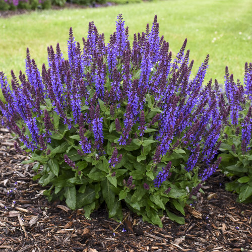
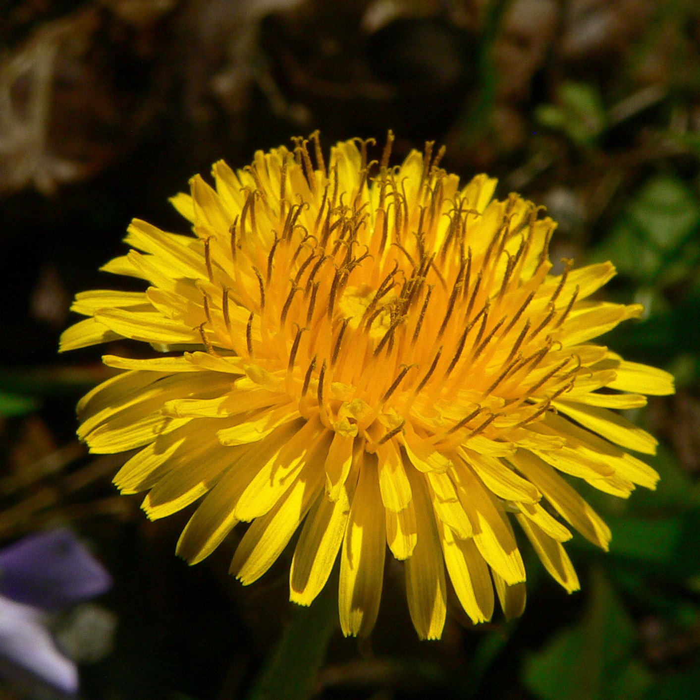
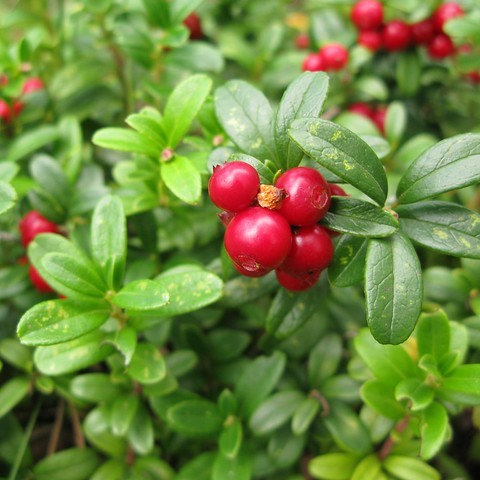

SALVIA

DANDELION

COWBERRY

Medicinal plants are plants that have been traditionally used for their therapeutic or medicinal properties. Many cultures around the world have used medicinal plants for thousands of years to treat various ailments and diseases.